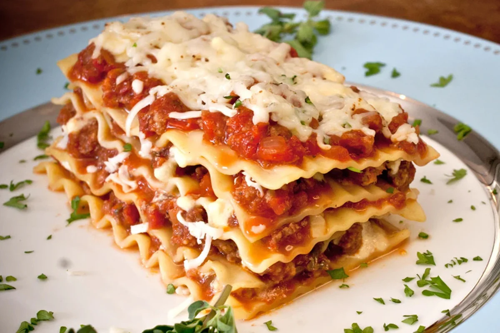

Lasagna
^
Description
Lasagna is a classic Italian dish comprised of layers of pasta, rich meat sauce, creamy cheese, and savory seasonings. Here's a basic recipe to guide you through the process:
Ingredients:
- Lasagna noodles
- Ground beef or Italian sausage
- Onion, diced
- Garlic, minced
- Tomato sauce
- Tomato paste
- Diced tomatoes
- Italian seasoning (oregano, basil, thyme)
- Salt and pepper
- Ricotta cheese
- Mozzarella cheese, shredded
- Parmesan cheese, grated
- Egg
- Fresh parsley, chopped (optional)
Instructions:
- Prepare the Sauce:
-
In a large skillet or saucepan, brown the ground beef or Italian sausage over medium heat.
Add diced onion and minced garlic to the skillet. Cook until the onion is translucent and fragrant.
Stir in tomato sauce, tomato paste, diced tomatoes, and Italian seasoning.
Season with salt and pepper to taste. Let the sauce simmer for about 20-30 minutes, allowing the flavors to meld together.
- Prepare the Cheese Mixture:
-
In a mixing bowl, combine ricotta cheese, shredded mozzarella cheese, grated Parmesan cheese, and a beaten egg.
Optionally, add chopped fresh parsley for extra flavor.
- Cook the Lasagna Noodles:
-
Boil a large pot of salted water.
Cook the lasagna noodles according to the package instructions until they are al dente (firm but not mushy).
Once cooked, drain the noodles and rinse them with cold water to prevent sticking.
- Assemble the Lasagna:
-
Preheat the oven to 375°F (190°C).
Spread a thin layer of the meat sauce in the bottom of a baking dish.
Arrange a layer of lasagna noodles over the sauce.
Spread a layer of the cheese mixture evenly over the noodles.
Repeat the layers, alternating between meat sauce, noodles, and cheese mixture, until the baking dish is filled, ending with a layer of cheese on top.
- Bake the Lasagna:
-
Cover the baking dish with aluminum foil.
Bake in the preheated oven for about 30 minutes.
Remove the foil and continue baking for an additional 10-15 minutes, or until the cheese is melted and bubbly, and the edges are golden brown.
- Serve and Enjoy:
-
Let the lasagna cool for a few minutes before slicing.
Garnish with fresh parsley, if desired.
Serve hot, and enjoy this delicious and comforting dish with your favorite side salad and garlic bread.
Enjoy your homemade lasagna! It's a perfect dish for family dinners, gatherings, or just cozy nights in.